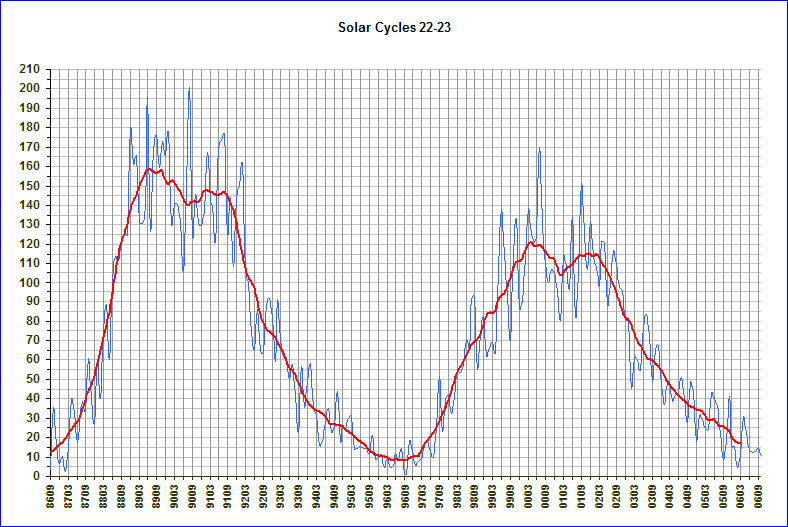

2006年 01.Jan-31.Dec
| Back Issues | Back Issues | Back Issues | Back Issues |
|---|---|---|---|
| Dec.01-31.2006 | Nov.01-30.2006 | Oct.01-31.2006 | Sep.01-30.2006 |
| Aug.01-31.2006 | Jul.01-31.2006 | Jun.01-30.2006 | May.01-31.2006 |
| Apr.01-30.2006 | Mar.01-31.2006 | Feb.01-28.2006 | Jan.01-31.2006 |


[Back Issues Jan-Dec.2006]
TIME:UTC(JST-09:00)
Report from JA1RJU (PM95sq)
31.Dec.2006(15:00b)
30.Dec.2006(15:00b)
29.Dec.2006(15:00b)
28.Dec.2006(15:00b)
27.Dec.2006(15:00b)
26.Dec.2006(15:00b)
25.Dec.2006(15:00c)
*ZL-TV 02:20- 45.240 --
*VK-TV 02:20- 46.172 --
*ZL-TV 03:20- 45.24/25/26--
ZL3SIX 03:20- 50.040 -- Beacon (RE66)
24.Dec.2006(15:00b)
23.Dec.2006(15:00c)
*ZL-TV 03:20- 45.24/25/26--
*VK-TV 03:20- 46.172 --
*VK-TV 04:10- 46.240 --
22.Dec.2006(15:00b)
21.Dec.2006(15:00b)
*BY-TV 08:30- 49.750 --
Report from JA1RJU (QM06cb)
20.Dec.2006(15:00b)
Report from JA1RJU (PM95sq/QM06cb)
19.Dec.2006(15:00b)
Report from JA1RJU (PM95sq)
18.Dec.2006(15:00b)
17.Dec.2006(15:00c)
*BY-TV 06:00- 49.750 --
16.Dec.2006(15:00d)
*BY-TV 01:00- 49.750 -- (Es.JA8)
VR2SIX/B 03:05- 50.075 CW Beacon
(BX2AB 07:25 50.110 SSB JA6)
(VR2SIX/B 07:30- 50.075 CW Beacon JA6)
BD4SI 08:05 50.110/115 SSB
VR2SIX/B 08:35- 50.075 CW Beacon
15.Dec.2006(15:00c)
(V73SIX/B 03:39- 50.014 CW Beacon JA1-3.7)
(KH6HI/B 03:46 50.0625 CW Beacon JA1-3.7)
(NH6P 04:05 50.088/110 CW/SSB JA1-3.7)
(VE7FG/B 04:29 50.033 CW Beacon JA7)
14.Dec.2006(15:00b)
13.Dec.2006(15:00b)
12.Dec.2006(15:00b)
11.Dec.2006(15:00b)
10.Dec.2006(15:00b)
09.Dec.2006(15:00c)
*VK-TV 04:20- 46.172/240 -- strong!
*ZL-TV 04:30- 45.24/25/26-- strong!
*BY-TV 07:00- 49.750 --
08.Dec.2006(15:00b)
07.Dec.2006(15:00b)
*BY-TV 02:00- 49.750 --
06.Dec.2006(15:00b)
05.Dec.2006(15:00b)
04.Dec.2006(15:00b)
03.Dec.2006(15:00b)
02.Dec.2006(15:00b)
01.Dec.2006(15:00c)
*VK-TV 01:45- 46.172 --
*ZL-TV 02:10- 45.24/25/26--
*BY-TV 04:00- 49.750 --
Report from JA1RJU (QM06cb/PM95sq)
30.Nov.2006(15:00b)
Report from JA1RJU (QM06cb)
29.Nov.2006(15:00b)
Report from JA1RJU (PM95sq/QM06cb)
28.Nov.2006(15:00b)
Report from JA1RJU (PM95sq)
27.Nov.2006(15:00c)
*VK-TV 03:00- 46.172/240 -- strong!
FK8SIX/B 03:15- 50.080 CW Beacon
26.Nov.2006(15:00b)
25.Nov.2006(15:00b)
24.Nov.2006(15:00b)
*BY-TV 02:00- 49.750 --
23.Nov.2006(15:00b)
22.Nov.2006(15:00b)
21.Nov.2006(15:00b)
20.Nov.2006(15:00b)
*VK-TV 03:20- 46.172 -- strong!
19.Nov.2006(15:00b)
18.Nov.2006(15:00b)
17.Nov.2006(15:00b)
16.Nov.2006(15:00b)
15.Nov.2006(15:00b)
14.Nov.2006(15:00c)
*VK-TV 03:00- 46.172 -- strong!
*ZL-TV 04:00- 45.250 -- weak
13.Nov.2006(15:00c)
*VK-TV 01:30- 46.172 -- strong!
*ZL-TV 01:30- 45.250 --
*VK-TV 02:10- 46.172/240 --
*ZL-TV 02:10- 45.240/250 --
12.Nov.2006(15:00d)
*VK-TV 03:50- 46.172 --
*VK-TV 04:15- 46.240 --
*ZL-TV 04:15- 45.24/25/26-- strong!
ZL2AAA 04:22 50.110 SSB
ZL2AAA 04:35 50.110 SSB peak!
11.Nov.2006(15:00b)
10.Nov.2006(15:00b)
Report from JA1RJU (QM06cb/PM95sq)
09.Nov.2006(10:00b)
Report from JA1RJU (QM06cb)
08.Nov.2006(21:00d)
*VK-TV 02:50- 46.172 --
*ZL-TV 03:50- 45.260 --
IK2GSO 18:04- 50.*** JT65A EME(JN45-QM06)NIL
9H1PA 18:36- 50.*** JT65A EME(JN75-QM06)NIL
G4IGO 19:00- 50.*** JT65A EME(IO80-QM06)-27dB
07.Nov.2006(19:00c)
*VK-TV 03:00- 46.172/240 -- strong!
G4IGO 18:02- 50.*** JT65A EME(IO80-QM06)NIL
Report from JA1RJU (PM95sq/QM06cb)
06.Nov.2006(19:00d)
SM7FJE 15:49- 50.*** JT65A EME(JO65-QM06)-26dB
MM0AMW 18:13- 50.*** JT65A EME(IO75-QM06)-27dB
G3FPQ 18:28- 50.*** JT65A EME(IO91-QM06)NIL
Report from JA1RJU (PM95sq)
05.Nov.2006(15:00b)
*VK-TV 04:10- 46.172 --
04.Nov.2006(15:00c)
*VK-TV 04:00- 46.172/240 -- weak
03.Nov.2006(15:00c)
*VK-TV 04:10- 46.172 -- strong!
*VK-TV 04:20- 46.240 --
02.Nov.2006(15:00c)
*VK-TV 02:40- 46.172 --
*BY-TV 06:00- 49.750 --
01.Nov.2006(15:00c)
*VK-TV 03:20- 46.172 --
BD4SI 03:22 50.110 CW
Report from JA1RJU (PM95sq)
31.Oct.2006(15:00b)
30.Oct.2006(15:00b)
29.Oct.2006(15:00b)
Report from JA1RJU (QM06cb/PM95sq)
28.Oct.2006(15:00b)
Report from JA1RJU (QM06cb)
27.Oct.2006(15:00b)
Report from JA1RJU (PM95sq/QM06cb)
26.Oct.2006(15:00c)
*BY-TV 02:30- 49.750 --
Report from JA1RJU (PM95sq)
25.Oct.2006(15:00b)
24.Oct.2006(15:00b)
23.Oct.2006(15:00b)
*VK-TV 03:20- 46.172/240 --
22.Oct.2006(15:00e)
*BY-TV 02:00- 49.750 --
*VK-TV 03:00- 46.172/240 -- strong!
VK4APG 03:48 50.110 SSB
VK1VP 03:50 50.110/140 SSB
VK4CZ 03:51 50.110 SSB
VK4CZ 04:00 50.130 SSB
VK3XQ 04:00 50.110 SSB
VK2KRR 03:07 50.135 SSB
VK3DUT 04:10 50.145 SSB
VK3AMK 04:00 50.140 SSB
VK5HS 04:17 50.110 SSB
VK2KRR 04:28 50.110/135 SSB
VK5HS 04:22 50.130 SSB
VK5ZBK 04:26 50.150 SSB
VK2AYM 04:29 50.110 SSB
VK3AMK 04:35 50.133 SSB
VK5RY 04:43 50.160 SSB
VK5RO 04:44 50.155 SSB
VK5ZLX 04:48 50.120 SSB
VK2AYM 04:50 50.160 SSB
VK3XQ 04:56 50.145 SSB 05:00z VK's F.OUT
*VK-TV 05:10- 46.172/240 -- still loud!
21.Oct.2006(15:00c)
*BY-TV 04:30- 49.750 --
*VK-TV 05:00- 46.240 -- weak
(VR2SIX/B 06:07- 50.075 CW Beacon JA6)
(VK6RSX/B 06:07- 50.304 CW Beacon JA6)
20.Oct.2006(15:00b)
19.Oct.2006(15:00b)
18.Oct.2006(15:00b)
17.Oct.2006(15:00b)
16.Oct.2006(15:00b)
*VK-TV 04:20- 46.172 -- weak
15.Oct.2006(15:00d)
*VK-TV 07:20- 46.172 -- weak
(9M2IDJ 07:29- 50.110 CW/SSB JA0)
(9M2IDJ 07:38- 50.110/105 CW/SSB JA2-6)
Report from JA1RJU (QM06cb/PM95sq)
14.Oct.2006(15:00c)
*BY-TV 02:30- 49.750 --
Report from JA1RJU (QM06cb)
13.Oct.2006(23:00d)
K2LZQ 02:50- 50.*** JT65A EME(FN20-QM06)NIL Via West.
*BY-TV 03:30- 49.750 --
DU1EV/B 07:30- 50.008 CW Beacon strong!
CT1HZE 13:04- 50.*** JT65A EME(IM57-QM06)-22dB Via East.
W1JJ 13:42- 50.206 JT65A EME(FN41-AG10ar)-14dB!! QSO with ZL8R
W1JJ 14:34- 50.*** JT65A EME(FN41-QM06)-23dB
MM0AMW 14:46- 50.*** JT65A EME(IO75-QM06)-26dB Via East.
K1SG 15:30- 50.*** JT65A EME(FN41-QM06)NIL
UT7UV 20:14- 50.*** JT65A EME(KO40-QM06)-24dB
I6BQI 22:02- 50.*** JT65A EME(JN72-QM06)-27dB
12.Oct.2006(24:00d)
WZ8D 01:40- 50.*** JT65A EME(EM89-QM06)NIL Via West.
VK6RSX/B 07:30- 50.304 CW Beacon strong!
DU1EV/B 07:30- 50.008 CW Beacon strong!
W7GJ 12:27- 50.206.8 JT65A EME(DN27-AG10ar)-21dB QSO with ZL8R
K6MYC 12:41- 50.206.5 JT65A EME(DM07-AG10ar)-21dB QSO with ZL8R
LY2BAW 19:14- 50.*** JT65A EME(KO25-QM06)NIL
W7IUV 19:38- 50.*** JT65A EME(DN07-QM06)NIL
PA7FA 21:39- 50.*** JT65A EME(JO21-QM06)-26dB
MM0AMW 22:10- 50.*** JT65A EME(IO75-QM06)NIL
Report from JA1RJU (PM95sq/QM06cb)
11.Oct.2006(15:00c)
CT1HZE 11:02- 50.*** JT65A EME(IM57-QM06)-22dB Via East.
G3FPQ 11:54- 50.*** JT65A EME(IO91-QM06)NIL Via East.
MM0AMW 12:14- 50.*** JT65A EME(IO75-QM06)NIL Via East.
I6BQI 20:05- 50.*** JT65A EME(JN72-QM06)-27dB
G4IGO 20:43- 50.*** JT65A EME(IO80-QM06)-28dB
MM0AMW 21:08- 50.*** JT65A EME(IO75-QM06)NIL
Report from JA1RJU (PM95sq)
10.Oct.2006(15:00c)
*BY-TV 03:30- 49.750 --
*VK-TV 04:50- 46.172 -- weak
09.Oct.2006(15:00c)
*VK-TV 04:30- 46.172 -- weak
*BY-TV 06:20- 49.750 --
*VK-TV 07:30- 46.172 --
08.Oct.2006(15:00b)
07.Oct.2006(15:00c)
06.Oct.2006(15:00c)
VK8RAS/B 05:45- 50.047 CW Beacon
(VK8VF/B 11:22- 50.310 CW Beacon)
05.Oct.2006(15:00b)
04.Oct.2006(15:00c)
DU1EV/B 07:00- 50.008 CW Beacon(only 7min) strong!
03.Oct.2006(15:00b)
*BY-TV 08:00- 49.750 --
02.Oct.2006(15:00b)
01.Oct.2006(15:00b)
*BY-TV 02:00- 49.750 --
Report from JA1RJU (PM95sq)
30.Sep.2006(15:00b)
29.Sep.2006(15:00b)
*BY-TV 01:40- 49.750 --
28.Sep.2006(15:00b)
27.Sep.2006(15:00c)
*BY-TV 09:00- 49.750 --
26.Sep.2006(15:00b)
25.Sep.2006(15:00b)
24.Sep.2006(15:00b)
Report from JA1RJU (QM06cb/PM95sq)
23.Sep.2006(15:00c)
DU1GM 09:08 50.103 CW
BV2SR 09:23 50.110 CW
BV2SR 09:30 50.110/120 SSB
VR2SIX/B 09:58- 50.075 CW Beacon
Report from JA1RJU (PM95sq/QM06cb)
22.Sep.2006(15:00b)
21.Sep.2006(15:00b)
20.Sep.2006(15:00b)
19.Sep.2006(15:00b)
18.Sep.2006(15:00b)
17.Sep.2006(15:00b)
16.Sep.2006(15:00b)
Report from JA1RJU (QM06cb/PM95sq)
15.Sep.2006(15:00b)
*BY-TV 09:00- 49.750 --
Report from JA1RJU (QM06cb)
14.Sep.2006(15:00c)
I6BQI 00:05- 50.*** JT65A EME(JN72-QM06)NIL
W8PAT 13:32- 50.*** JT65A EME(EN81-QM06)-22dB
G4PCI 14:03- 50.*** JT65A EME(IO91-QM06)-28dB
G4IGO 22:58- 50.*** JT65A EME(IO80-QM06)-26dB
13.Sep.2006(15:00d)
ZS6NK 02:16- 50.*** JT65A EME(KG48-QM06)-26dB
MM0AMW 12:26- 50.*** JT65A EME(IO75-QM06)-25dB Via East.
G4PCI 12:48- 50.*** JT65A EME(IO91-QM06)-21dB
PE1BTX 20:55- 50.*** JT65A EME(JO22-QM06)-19dB at peak!
G4IGO 22:23- 50.*** JT65A EME(IO80-QM06)-25dB
I6BQI 23:30- 50.*** JT65A EME(JN72-QM06)NIL
12.Sep.2006(15:00c)
*BY-TV 01:00- 49.750 --
MM0AMW 12:18- 50.*** JT65A EME(IO75-QM06)-27dB Via East.
K7AD 13:32- 50.*** JT65A EME(DN06-QM06)-27dB(-19dB peak!)
W8PAT 15:10- 50.*** JT65A EME(EN81-QM06)NIL
PE1BTX 20:54- 50.*** JT65A EME(JO22-QM06)-24dB
G4IGO 21:38- 50.*** JT65A EME(IO80-QM06)-27dB
Report from JA1RJU (PM95sq/QM06cb)
11.Sep.2006(22:00c)
*BY-TV 08:00- 49.750 --
PE1BTX 21:58- 50.*** JT65A EME(JO22-QM06)-27dB
10.Sep.2006(15:00b)
*BY-TV 02:00- 49.750 --
09.Sep.2006(15:00b)
*BY-TV 08:00- 49.750 --
08.Sep.2006(15:00b)
07.Sep.2006(15:00b)
*BY-TV 03:30- 49.750 --
06.Sep.2006(15:00c)
*BY-TV 09:00- 49.750 --
XV3DHY 09:09 50.110 CW CQ
DU1EV/B 09:40- 50.008 CW Beacon
05.Sep.2006(15:00c)
*BY-TV 00:00- 49.750 --
DS1PDF 08:56 50.110 SSB
DS1PDF 09:03 50.110 CW
04.Sep.2006(15:00b)
*BY-TV 00:00- 49.750 --
03.Sep.2006(15:00b)
*BY-TV 03:00- 49.750 -- weak
02.Sep.2006(15:00c)
*BY-TV 01:00- 49.750 --
*9M-TV 01:00- 48.240 --
01.Sep.2006(15:00b)
*BY-TV 01:00- 49.750 --
Report from JA1RJU (PM95sq)
31.Aug.2006(15:00b)
*BY-TV 01:00- 49.750 --
30.Aug.2006(15:00c)
*BY-TV 01:00- 49.750 --
VR2SIX/B 07:25- 50.075 CW Beacon
VR2SIX/B 10:00- 50.075 CW Beacon still good!
29.Aug.2006(15:00c)
*BY-TV 02:00- 49.750 --
*9M-TV 02:00- 48.240 --
28.Aug.2006(15:00b)
*BY-TV 00:00- 49.750 --
27.Aug.2006(15:00b)
*BY-TV 00:00- 49.750 -- weak
26.Aug.2006(15:00d)
*BY-TV 00:00- 49.750 --
VR2SIX/B 02:20- 50.075 CW Beacon
*9M-TV 03:30- 48.240/260 --
BD4SI 04:10 50.110 SSB
BD4SI 05:20 50.110 SSB
25.Aug.2006(15:00c)
*BY-TV 00:00- 49.750 --
VR2SIX/B 02:30- 50.075 CW Beacon
VR2SIX/B 12:05- 50.075 CW Beacon again!
24.Aug.2006(15:00c)
*BY-TV 01:00- 49.750 --
23.Aug.2006(15:00c)
*BY-TV 01:00- 49.750 --
VR2SIX/B 08:45- 50.075 CW Beacon
22.Aug.2006(15:00c)
*BY-TV 01:00- 49.750 --
VR2SIX/B 07:30- 50.075 CW Beacon
VR2SIX/B 10:05- 50.075 CW still good!
21.Aug.2006(15:00b)
*BY-TV 08:00- 49.750 --
*9M-TV 08:30- 48.240/260 --
20.Aug.2006(15:00b)
19-20.Aug 「ハムフェア2006」(東京・有明)
19.Aug.2006(15:00b)
19-20.Aug 「ハムフェア2006」(東京・有明)
18.Aug.2006(15:00d)
*BY-TV 00:00- 49.750 --
VR2SIX/B 05:32- 50.075 CW Beacon
BD9BA 09:09 50.110 SSB CQ
17.Aug.2006(15:00b)
*BY-TV 00:00- 49.750 --
16.Aug.2006(15:00b)
*BY-TV 00:00- 49.750 --
15.Aug.2006(15:00b)
*BY-TV 00:00- 49.750 --
14.Aug.2006(15:00b)
*BY-TV 00:00- 49.750 --
13.Aug.2006(15:00d)
*BY-TV 00:00- 49.750 --
*9M-TV 02:30- 48.24/25/26--
VR2UW 02:50 50.107 CW
VR2SIX/B 02:50- 50.075 CW Beacon
VR2HF 03:26 50.110 CW
12.Aug.2006(15:00c)
*BY-TV 00:00- 49.750 --
(XX9TJS 10:30- 50.115 CW/SSB)
11.Aug.2006(15:00b)
*BY-TV 00:00- 49.750 --
10.Aug.2006(15:00b)
*BY-TV 00:00- 49.750 --
09.Aug.2006(15:00b)
*BY-TV 02:30- 49.750 --
08.Aug.2006(15:00c)
*BY-TV 00:00- 49.750 --
07.Aug.2006(15:00c)
*BY-TV 00:00- 49.750 --
06.Aug.2006(15:00c)
*BY-TV 00:00- 49.750 --
05.Aug.2006(15:00d)
*BY-TV 00:00- 49.750 --
VR2SIX/B 02:50- 50.075 CW Beacon
VR2XLN 04:57 50.115 SSB
BW2/JH0KHR 05:30 50.120 SSB
VR2SIX/B 05:40- 50.075 CW Beacon
VR2XMT 06:25 50.110 SSB
DZ50C 06:30 50.230 SSB op JF1IST qsl via JP1IOF
VR2RR 06:36 50.140 CW/SSB Suzuki-san qsl to VR2 Buro
BD7OH 07:00 50.110/130 SSB CQ/qso
VR2RR 07:15 50.140 CW
04.Aug.2006(15:00b)
*BY-TV 00:00- 49.750 --
03.Aug.2006(15:00b)
*BY-TV 00:00- 49.750 --
02.Aug.2006(15:00c)
*BY-TV 00:00- 49.750 --
*9M-TV 02:30- 48.240/260 --
01.Aug.2006(15:00c)
*BY-TV 00:00- 49.750 --
*9M-TV 07:00- 48.24/25/26--
Report from JA1RJU (PM95sq)
31.Jul.2006(15:00b)
*BY-TV 00:00- 49.750 --
VR2SIX/B 02:50- 50.075 CW Beacon
30.Jul.2006(15:00c)
*BY-TV 00:00- 49.750 --
*P5-AM 07:00- 48.250 -- AM(North Korea BC stn)
VR2XLN 07:30 50.110 SSB
VR2SIX/B 07:30- 50.075 CW Beacon
29.Jul.2006(15:00c)
*BY-TV 00:00- 49.750 --
BX2AB 06:24 50.107 CW
KG6DX 07:58 50.110 CW CQ
28.Jul.2006(15:00b)
*BY-TV 00:00- 49.750 --
(Nothing open to US/EU)
27.Jul.2006(15:00c)
*BY-TV 00:00- 49.750 --
*9M-TV 02:00- 48.24/25/26--
(Nothing open to US/EU)
26.Jul.2006(15:00c)
*BY-TV 00:00- 49.750 --
*9M-TV 02:00- 48.240/260 --
*??-TV 04:00- 48.250 --
(Nothing open to EU in JA1=PM95sq)
25.Jul.2006(15:00c)
*BY-TV 00:00- 49.750 --
*??-TV 04:00- 48.250 --
(A61Q 06:35 50.115 CW JA0)
(Nothing EU Open Today in JA1=PM95sq)
24.Jul.2006(15:00c)
*BY-TV 00:00- 49.750 --
(Nothing EU Open Today in JA1=PM95sq)
23.Jul.2006(15:00d)
*BY-TV 00:00- 49.750 --
BV2B 00:50 50.115 SSB
JE7IZM/JD1 02:50 50.380 SSB
BV2B 02:52 50.110 SSB
KG6DX 06:34 50.110 CW
HL3IUA 06:47 50.110 CW
(Nothing EU Open Today in JA1=PM95sq)
Report from JA1RJU (QM06cb)
22.Jul.2006(15:00d)
*BY-TV 22:00- 49.750 --
DS4FET 23:27 50.110 SSB
***********************************
(UN8GC 03:48 50.103 CW JA2)
UN8GC 04:16 50.110 CW
(UN8GC 05:13 50.110 CW JA8)
JE7IZM/JD1 05:57 50.175 SSB
KG6DX 06:25 50.100 CW
(DL2NO 08:33 50.102 CW JA8)
(SM6CMU 08:42 50.102 CW JA8)
(PA4PA 08:45 50.102 CW JA8)
KG6DX 08:48 50.100 CW strong!
OH7PI 09:10 50.104 CW CQ 559
***********************************
OZ6PI.SV1DH.PA2V.OH1VR
***********************************
21.Jul.2006(15:00c)
*BY-TV 00:00- 49.750 --
(NL7Z 04:56 50.110 CW JA7)
(NL7Z 05:30 50.110 CW JS6)
(Nothing EU Open Today in JA)
20.Jul.2006(17:00d)
*BY-TV 00:00- 49.750 --
K1SG 16:10 50.*** JT65A EME(FN42-QM06)-25dB
(Nothing EU Open Today in JA1=QM06cb)
19.Jul.2006(15:00d)
*BY-TV 00:00- 49.750 --
NL7Z 00:34 50.110/105 CW
NL7Z 01:01 50.110 CW Kevin New antennas test
NL7Z 06:32 50.115 CW 599 strong!
DK1MAX 06:48 50.103 CW good sigs!
I4EAT 06:57 50.106 CW
DJ3TF 07:07 50.088 CW
PF7M 07:15 50.086 CW (worked 11 JA stn's)
OH2BC 07:17 50.102 CW
I0JX 07:32 50.085 CW
SM3GSK 07:45 50.095 CW
(F1VJQ 09:30 50.098 CW JA7)
***************************************
UT4UO.IK2GSO.I4EAT.IK4DRY.S54T.SP9CCD
SP6VGJ.PA5MW.ON4GB.OH3XA.ON7GB.DJ9ON
G4IFX.DL7CM.OH2MA.DJ2BW.ON4AOI.F1VJQ
#QRV info=A71EM.HA7UG
***************************************
18.Jul.2006(15:00e)
*BY-TV 00:00- 49.750 --
*9M-TV 02:00- 48.240/260 --
UN1SIX/B 04:00- 50.0232 CW Beacon strong!
UN1SIX/B 05:00- 50.0232 CW still good.
9A2DS 07:20 50.100 CW
4S7AB 07:30 50.105 CW
9A2DS 07:57 50.107/105 CW CQing
9A2DB 08:12 50.085 CW
9A2TN 08:17 50.098 CW
UY5HF 08:23 50.087 CW
HA3HV 08:30 50.085 CW
***************************************
UY5HF.UR5MID.UT3IZ.S59A.DL9USA.LY2UM.9A4K
OK1KT.OM5KM
#QRV info=A71EM.HV5PUL.HB0/HB9QQ
***************************************
Report from JA1RJU (PM95sq)
17.Jul.2006(15:00d)
*BY-TV 00:00- 49.750 --
*9M-TV 00:00- 48.24/25/26--
HL1IWD 01:50 50.080/82 CW
BD2LH 06:18 50.115 SSB
DK1MAX 06:20 50.081 CW
(IZ1EPM 06:27 50.081 CW QM05)
(IK2GSO 06:28 50.086 CW QM05/06)
IZ1EPM 07:07 50.085 CW
4S7AB 07:55 50.105 CW
4S7AB 08:37 50.105 CW UP 1KHz strong!
DS1PDF 08:47 50.150 SSB
6K2DIO 09:10 50.095 CW
16.Jul.2006(15:00d)
*BY-TV 00:00- 49.750 --
*9M-TV 02:00- 48.240/260 --
HL3IB 02:20 50.115 SSB
BA5AG 02:25 50.100 CW
HL3IB 02:41 50.094/97 CW
BD4SI 04:07 50.125 SSB
(Nothing EU Open Today in JA1=PM95sq)
Report from JA1RJU (QM06cb)
15.Jul.2006(15:00d)
*BY-TV 00:00- 49.750 --
*9M-TV 04:00- 48.240/260 --
*??-TV 04:00- 48.250 --
BD9BA 04:30 50.105 CW
VR2UW 04:30 50.102 CW
(UN8GC 04:35 50.097 CW JA2.3)
VR2XLN 04:40 50.115 SSB
BY4TAA 05:23 50.108 CW
BD4SI 05:30 50.120 SSB
BY4TAA 06:49 50.110 SSB
BG9ADR 07:31 50.097 CW
4S7AB 07:53 50.105 CW
Report from JA1RJU (PM95sq)
14.Jul.2006(15:00d)
*BY-TV 00:00- 49.750 --
*??-TV 03:00- 48.250 --
UR5MID 05:50 50.086 CW
SV1DH 06:30 50.095 CW
SV1DH 06:46 50.126 SSB
I4EAT 07:00 50.088 CW
SM2GCQ 07:05 50.099/92 CW
SM3BIU 07:13 50.100 CW
SV1DH 07:32 50.127 CW CW/CQ
CT1HZE 07:48 50.088/89 CW
***********************************************
I6BQI.IZ5EKV.IK2GSO.SM6CVX.SM7FJE.HA3HV.S54G
EA3AKY.IW0FFK.IZ1EPM
***********************************************
13.Jul.2006(16:00e)
*BY-TV 00:00- 49.750 --
*??-TV 01:00- 48.250 -- strong!
UN1SIX/B 03:20- 50.0231 CW Beacon
9H1XT 06:17 50.085 CW
5B4FL 06:18 50.085 CW
5B4AGN 06:40 50.085 CW
IZ1EPM 06:55 50.099 CW
9A1CCY 07:15 50.101 CW
I4EAT 07:22 50.087 CW
I4EAT 08:00 50.087 CW CQ JA (still good sig!)
(ZC4LI 13:15 50.118 CW JA6)
ZC4LI 13:45 50.118 CW
5B4FL 14:12 50.084 CW
5B4FL 14:35 50.084 CW still good!
BD4SI 15:05 50.115 SSB
12.Jul.2006(15:00c)
*BY-TV 00:00- 49.750 --
*9M-TV 01:00- 48.24/25/26--
UA0CQ 02:25 50.110 CW testing TX
(UN1SIX/B 03:45 50.023 CW JA2)
(9H1AW 08:51 50.098 CW JA0)
(Nothing W/EU Open Today in JA1=PM95sq)
11.Jul.2006(15:00d)
*BY-TV 00:00- 49.750 --
DS1MFC 02:31 50.110 SSB
UN1SIX/B 03:25- 50.0231 CW Beacon
*??-TV 04:00- 48.250 --
(YO7VS 06:15 50.100 CW JA1.2)
OH3XA 08:05 50.099 CW
OH1MLZ 08:30 50.103 CW
(OH2BC 09:12 50.112 CW JA1-6.9)
**********************************************
◎ YO7VS.IK0FTA
**********************************************
10.Jul.2006(15:00d)
*BY-TV 00:00- 49.750 --
*??-TV 02:00- 48.250 --
UR5EDU 05:10 50.099 CW
UT3IZ 05:27 50.103 CW
IK0FTA 05:33 50.087 CW
UT5EU 06:03 50.085/88 CW
LZ3RX 06:10 50.083 CW
OZ4VV 06:16 50.101 CW
OM7PY 06:26 50.085 CW
SP6GWB 06:41 50.086 CW
(HA3HV 06:45 50.117 CW JA7)
LZ3RX 06:49 50.086 CW
F6FHP 06:49 50.085 CW
I6BQI 07:42 50.098 CW
(HB9QQ 07:13 50.096 CW JA6)
MM0AJW 07:29 50.083 CW
GM4NFC 07:30 50.120 SSB
ON4KST 07:51 50.089 CW
DK2PH 07:53 50.083 CW
GM4VVX 08:01 50.086 CW
F6FHP 08:12 50.116 CW
(HA8CE 08:26 50.101 CW JA7)
HA3HV 08:30 50.105 CW
(MM0AMW 08:59 50.088 CW JA1)
9A5CY 09:08 50.102 CW
IV3SIX 09:34 50.101 CW
IV3SIX 09:57 50.116 CW
***********************************************************
◎ Open to Europe (05:10z-10:20z)
5B4FL.9A2DS.9A7V.GI4SJQ.I4EAT.IK1RLI.IZ5EKV.EA7KW.EI3IO
HA4XG.PE1MZS.PF7M.PA4PA.ON4AXU.ON4AOI.DL2DXA.DF3EC.DL3YEE
DK5WL.DL9USA.UX0FF.UY5ON.YT1AU.SP6MLK.SP9CCD.SV1DH.UT3UA.
UN1SIX/B...etc.
***********************************************************
08-09.Jul.2006(00:00a)
Flash DX ! Reportはお休みします
***********************************************************
◎ Open to Europe (09 Jul.05:00z-09:30z)
9H1BT.9H1XT.9H1PA.9H1YZ.I6BQI.I0WTD.I0JX.I4YNO.I0DLP.IK0FTA.
IS0GQX.HA8CE.SV1DH.SV8DYD.UY5HF.YU1EU.YZ1AU.9A2DS.LZ2CC.etc.
***********************************************************
07.Jul.2006(15:00c)
*BY-TV 00:00- 49.750 --
*9M-TV 03:00- 48.24/25/26--
5B4FL 05:52 50.0955 CW
(SP9HWY 06:13 50.115 CW JA5)
(IK2GSO 06:15 50.115 CW JA5)
(OH3XR 06:20 50.115 CW JA5)
IK0FTA 06:57 50.087 CW
KG6DX 07:06 50.090 CW
9A2DS 07:15 50.090 CW
DS4DBF 07:20 50.102 CW CQ NA & EU!
IV3SIX 08:36 50.080 CW
(YT1AU 08:42 50.115 CW JA7)
I4EAT 08:54 50.088 CW
LY3UM 09:18 50.081 CW
06.Jul.2006(15:00c)
*BY-TV 00:00- 49.750 --
*9M-TV 02:00- 48.24/25/26--
(UN1SIX/B 02:20- 50.0231 CW JA2)
(IK2GSO 06:13 50.100 CW JA5)
05.Jul.2006(15:00c)
*BY-TV 00:00- 49.750 --
*9M-TV 02:00- 48.240/260 --
*??-TV 02:00- 48.250 --
UN1SIX/B 03:40- 50.0231 CW Beacon
(5B4FL 07:05 50.095 CW JA6)
(Nothing W/EU Open Today in JA1=PM95sq)
04.Jul.2006(15:00c)
*BY-TV 00:00- 49.750 --
*9M-TV 02:00- 48.240/260 --
*??-TV 02:00- 48.250 --
BD4XA 03:05 50.110 SSB
(UR5EDU 06:03- 50.101 CW JA7.6)
(Nothing W/EU Open Today in JA1=PM95sq)
03.Jul.2006(15:00d)
*BY-TV 00:00- 49.750 --
*9M-TV 01:00- 48.260 --
(LY2BAW 06:10 50.081 CW JA5.8)
LY2BAW 06:35 50.081 CW JA1.2.7.9 QSB!
(LY3UM 07:24 50.102 CW JA2)
LY2BAW 07:25 50.081 CW sig up! in PM95
(DL9USA 07:57 50.088 CW JA6)
*P5-AM 09:00- 48.250 --
02.Jul.2006(15:00c)
NL7Z 23:40 50.110 CW
**********************************
*BY-TV 00:00- 49.750 --
*9M-TV 02:00- 48.260 --
(I6BQI 07:54 50.087 CW JA8)
(UN7QX 09:00 50.107 CW JA8)
(Nothing EU Open Today in JA1=PM95sq)
01.Jul.2006(16:00e)
*BY-TV 00:00- 49.750 --
KG6DX 01:44 50.110 CW CQ DX!
UN1SIX/B 04:20- 50.0231 CW Beacon
UN1SIX/B 05:00- 50.0231 CW Beacon sig up
UR5EDU 05:45 50.102 CW
(UT3IZ 05:58 50.098 CW JA4)
A61Q 06:34 50.116 CW
(A61Q 07:53 50.116 CW JA2.3.4.5.7.9.0)
UN8GC 13:40 50.110 CW
UN1SIX/B 13:40- 50.0231 CW Beacon
UN8GC 15:00 50.110 CW still good!! 599
UN8GC 15:04 50.110 SSB good sig 59!
Report from JA1RJU (QM06cb)
30.Jun.2006(15:00d)
*BY-TV 22:00- 49.750 --
**************************
*BY-TV 00:00- 49.750 --
9M-TV 05:00 48.240/260 --
*??-TV 06:00- 48.250 --
(Nothing W/EU Open Today)
29.Jun.2006(15:00d)
*BY-TV 00:00- 49.750 --
*??-TV 00:00- 48.250 --
5B4FL 05:00 50.100 CW strong 599!
5B8AD 05:25 50.091 CW
(4X1FQ 05:46 50.096 CW JA1.2)
5B4FL 06:08 50.0995 CW still strong
5B8AD 06:15 50.091 CW
(4X1UN 06:20 50.099 CW JA2)
UN1SIX/B 06:30- 50.0231 CW Beacon still good!
(A61Q 08:40 50.102 CW JA2.3)
28.Jun.2006(15:00c)
*BY-TV 00:00- 49.750 --
*9M-TV 03:00- 48.240/260 --
UN1SIX/B 04:20- 50.0231 CW Beacon
OH1XX 07:47 50.103 CW
OH3XR 08:03 50.105 CW
Report from JA1RJU (PM95sq)
27.Jun.2006(15:00d)
*BY-TV 00:00- 49.750 --
*9M-TV 03:00- 48.240/260 --
(OH2RF 05:16 50.088 CW JA0.1.2.3.7)
UR5EDU 05:03 50.101 CW
UY3ZZ 05:45 50.100 CW
(UR5EDU 06:25 50.127 SSB JA2.3.4.7)
Report from JA1RJU (QM06cb)
26.Jun.2006(15:00d)
*BY-TV 00:00- 49.750 --
*??-TV 03:00- 48.250 --
9H1XT 05:08 50.102 CW
9H1YZ 05:12 50.102 CW
DS4DBF 05:25 50.102 CW
F8RZ 07:00 50.086 CW
IT9XDJ 07:66 50.088 CW
SP6TRQ/7 08:03 50.100 CW
IK0FTA 08:11 50.087 CW
SP5EWY 08:24 50.093 CW
OZ3K 08:55 50.100/086 CW
OZ1FZ 09:03 50.103 CW
OZ4LP 09:07 50.987 CW
OZ1LO 09:12 50.087 CW
V47KV 10:20- 50.*** CW EME(FK87-QM06) NIL
Report from JA1RJU (PM95sq)
25.Jun.2006(15:00d)
*BY-TV 00:00- 49.750 --
(K0GU 02:33 50.099 CW JA2)
*9M-TV 05:00- 48.240/260 --
*??-TV 05:00- 48.250 --
9A7W 05:28 50.095/87 CW
(HA5PT 05:37 50.096 CW JA8)
(5B4FL 06:00- 50.*** CW JA1.2.3.7.8.0=Nick reported)
(LY2BAW 06:45 50.081 CW JA2.3)
24.Jun.2006(15:00d)
*BY-TV 00:00- 49.750 --
(4X4DK 06:38 50.086 CW JA1)
9H1YZ 07:15 50.100 CW
(LY2BAW 07:29 50.081 CW JA3)
(OK1DO 07:40 50.096 CW JA3)
(9H1TX 07:56 50.080 CW JA2)
23.Jun.2006(15:00d)
*BY-TV 00:00- 49.750 --
(YO7VS 06:00 50.103 CW JA8)
SV1DH 0608 50.100 CW
(I4EAT 06:22 50.086 CW JA0)
(5B8AD 06:30 50.085 CW JA8) 100W+4EL
(LZ1XL 07:00 50.085 CW JA8)
(OH3XA 07:00 50.085 CW JA8)
(YO7AZ 07:05 50.088 CW JA6)
9A2DS 08:28 80.087 CW
22.Jun.2006(15:00c)
*BY-TV 00:00- 49.750 --
*??-TV 03:00- 48.250 --
(Nothing W/EU Open Today)
21.Jun.2006(15:00d)
*BY-TV 02:00- 49.750 --
*??-TV 05:00- 48.250 --
(9H1YZ 06:05 50.100 CW JA8)
(PA2M 06:56 50.087 CW JA8)
(G4IFX 07:03 50.102 CW JA7)
(G4FUF 07:16 50.102 CW JA7)
20.Jun.2006(15:00d)
(9A2DS 05:46 50.102 CW JA8)
(UT4UO 06:00 50.102 CW JA8)
S51IV 07:44 50.102 CW
(OH3XR 08:02 50.104 CW JA3.7.8)
(S57RR 09:10 50.096 CW JA8)
19.Jun.2006(15:00d)
*BY-TV 02:00- 49.750 --
*??-TV 03:00- 48.250 --
(OK1FM 06:44 50.093 CW JA1)
(IK2GSO 06:44 50.085 CW JA1)
(DK1MAX 06:41 50.093 CW JA1.7)
OH1TN 07:00 50.097 CW
DL2DXA 07:05 50.097 CW good sig!
DL9USA 07:17 50.082 CW
(SM5CEU 07:25 50.088 CW JA3)
(OH3XR 07:23 50.113 CW JA1.3)
(G3ZSS 07:33 50.088 CW JA1.3)
(OZ4VV 07:38 50.088 CW JA1)
(SM6CMU 07:38 50.088 CW JA1.3)
OH1ML 07:52 50.082 CW
G3FPQ 07:55 50.082 CW good sig!
G3WOS 08:02 50.085 CW
(G4IFX 08:10 50.088 CW
18.Jun.2006(15:00d)
*BY-TV 00:00- 49.750 --
*9M-TV 00:00- 48.240 --
(UN1SIX/B 05:35- 50.0231 CW JA2)
(9A4M 06:30 50.101 CW JA7)
SP7EXY 06:38 50.088 CW
(HA1A 06:52 50.086 CW JA7)
(YU5U 06:52 50.115 CW JA2)
(HA1YA 06:59 50.092 CW JA7)
IS0GOX 07:17 50.104 CW weak
(9A5Y 07:36 50.090 CW JA7)
Report from JA1RJU (QM06cb)
17.Jun.2006(15:00e)
VE7AG 22:55 50.110 CW
VE7SL 23:03 50.103 CW
VE7AG 23:16 50.116 CW
VE7DAY 23:25 50.107 CW
VE7AG 23:39 50.116 CW CQing
**********************************
*BY-TV 00:00- 49.750 --
DS4FET 00:14 50.110 SSB
VE7AG 00:23 50.110 CW CQing
VE7DAY 00:30 50.107 CW
KE7V 00:38 50.096 CW
VE7AG 01:01 50.115 CW
K0GU 01:12 50.081 CW
KE7V 01:25 50.096 CW
NN7J 01:35 50.110 CW
XV3BB 01:57 50.095 CW
DS1MIN 02:07 50.096 CW
KE7V 02:07 50.096 CW
HL615UF 02:18 50.105 CW QSL via HL0NHQ
HL5BMX 02:40 50.118 SSB
6K2DFG 03:25 50.114 SSB
NL7Z 04:25 50.115 CW
(9A2DS 06:52 50.097 CW JA1)
16.Jun.2006(15:00d)
*BY-TV 00:00- 49.750 --
(UN1SIX/B 04:08- 50.0231 CW Beacon JA2)
EY8MM 05:30 50.110/101 CW strong!
S57RR 06:13 50.098 CW
DK1MAX 06:20 50.080 CW
NL7Z 06:25 50.115 CW
IK2GSO 06:28 50.091 CW
IV3SIX 06:35 50.090 CW
S57RR 06:55 50.098 CW CQing
15.Jun.2006(15:00d)
*BY-TV 00:00- 49.750 --
*9M-TV 02:00- 48.240/260 --
BD7KLO 04:38 50.110 SSB
5B4FL 05:50 50.102 CW
SP5EWY 05:55 50.082 CW
S57RR 05:58 50.090 CW
SP5EWY 06:03 50.085 CW
SP5ENA 06:08 50.085 CW
UR5MID 06:09 50.085 CW
I0WTD 06:11 50.085 CW
SP8AWL 06:15 50.085 CW
I6BQI 06:19 50.085 CW
(HV0A 06:22 50.073 CW JA2)
HV0A 06:33 50.073 CW
IT9AF 07:04 50.096 CW
9H1BT 07:11 50.103 CW strong!
SP8NCJ 07:13 50.110 SSB
IT9AF 07:18 50.104 CW
SP5EWY 07:22 50.092 CW
UT3UZ 07:32 50.090 CW
UT5G/B 07:25 50.084 CW Beacon
UT4UO 07:26 50.090 CW
SP6GWB 07:32 50.100 CW
IT9AF 07:33 50.108 CW
UR5MID 07:36 50.093 CW
US4EX 07:38 50.085 CW
DL9USA 08:00 50.092 CW
(HB9QQ 08:17 50.099 CW JA9)
HB9QQ 08:27 50.088 CW
UR5EDU 08:41 50.101 CW
(ON4IQ 08:47 50.084 CW JA9)
14.Jun.2006(15:00d)
*BY-TV 00:00- 49.750 --
*9M-TV 02:00- 48.240/260 --
(UN1SIX/B 02:00- 50.0231 CW JA2.8)
DZ50C 03:40 50.110/120 SSB
VR2KW 03:50 50.115 SSB
XV3BB 04:37 50.127 CW
BD4SI 05:12 50.110 SSB
DU1GM 05:31 50.105 CW (ex DU1/GM4COK)
XV3BB 05:35 50.135 SSB
EY8MM 05:39 50.101 CW
DK1MAX 05:42 50.080 CW
UX0FF 05:54 50.103 CW
IZ4GWE 06:03 50.088 CW
IV3SIX 06:22 50.091 CW
HA1YA 06:46 50.097 CW
S57RR 06:53 50.098 CW
(5T5SN 07:30 50.--- CW JA7/8 no QSO)
S57RR 07:55 50.098 CW good sig!
(G4IGO 08:00 50.081 CW JA1.7)
(HA3HW 08:04 50.097 CW JA2?)
HL1LTC 08:06 50.108 CW
9A2DS 08:17 50.089 CW
G4FVP 08:27 50.082 CW
YU6DZ 08:45 50.098 CW
UN7QX 08:49 50.101 CW CQing
Report from JA1RJU (PM95sq)
13.Jun.2006(15:00e)
*BY-TV 00:00- 49.750 --
(UN8GC 02:33 50.110 CW JA7)
(UT5ID 05:01 50.101 CW JA2)
5B4FL 05:13 50.098 CW
IK5MEJ 05:24 50.092 CW
(DK1MAX 05:26 50.080 CW JA2)
IZ4BEZ 05:29 50.092 CW
5B4FL 05:35 50.105 CW
IK2GSO 05:38 50.089 CW
(F6FHP 05:38 50.092 CW JA2)
UT7QF 05:40 50.090 CW
(IK2GSO 05:42 50.089 CW JA2)
(LZ1XL 05:44 50.100 CW JA7)
(UY5HF 05:46 50.100 CW JA7)
(DK1MAX 05:46 50.080 CW JA2)
(UT7GA 05:48 50.100 CW JA7)
(HA1YA 05:52 50.097 CW JA6)
(LZ3CQ 05:55 50.086 CW
(I5ICD 06:09 50.088 CW JA7)
(IZ4BEZ 06:10 50.087 CW
(DK2PH 06:03 50.082 CW JA2)
DK2PH 06:10 50.082 CW
(S51IV 06:13 50.088 CW
SP6GWB 06:14 50.085 CW
(IT9RZR 06:20 50.101 CW
(DK2PH 06:22 50.082 CW JA7)
HA1YA 06:32 50.096 CW JA1.5.6.7.9
(T77GO 06:55 50.150 SSB JA7)
HA1YA 06:58 50.097 CW JA1
(LY2BAW 07:01 50.101 CW JA7)
(ON4PS 07:10 50.--- CW JA7)
(S51IV 07:17 50.098 CW JA7)
(HA2SX 08:12 50.088 CW JA8)
(IK1JXY 07:13 50.090 CW JA7)
(EH5FX 07:24 50.092 CW JA7)
(HA3MQ 08:14 50.089 CW JA8)
(EH5FX 08:15 50.092 CW JA7)
12.Jun.2006(15:00d)
*BY-TV 00:00- 49.750 --
UT8IO 03:02 50.101 CW
(9A8A 05:35 50.086 CW JA0)
(UY5HF 05:40 50.108 CW JA4)
(HA1FV 05:40 50.085 CW JA0)
(HA6NL 05:40 50.085 CW JA0)
DK1MAX 05:54 50.080 CW
DK1MAX 06:11 50.080 CW good sig!
5B4FL 06:21 50.100 CW
IK0FTA 06:40 50.087 CW
S51JF 06:48 50.085 CW
HA1YA 06:58 50.097 CW JA1.4.5 etc. 7 QSO!
(SV8CS 07:25 50.120 CW JA2.3.8)
11.Jun.2006(15:00d)
*BY-TV 00:00- 49.750 --
HL1LTC 02:12 50.110 SSB
UN1SIX/B 02:15- 50.0231 CW Beacon
*??-TV 04:00- 48.250 --
(IK0FTA 06:48 50.086 CW JA7)
(9A4K 06:55 50.069 CW JA1)
IK2GSO 07:00 50.090 CW
DK1MAX 07:05 50.092 CW
(EA3AKY 07:07 50.094 CW JA1.7)
IK1EGC 07:07 50.092 CW
IK2GSO 07:10 50.090 CW
DK1MAX 07:12 50.086 CW
ON4IQ 07:17 50.085 CW
9A2DS 07:19 50.099 CW
LY2BAW 07:30 50.077 CW
I5IA? 07:37 50.096 CW
OE2UAR 07:38 50.099 CW
PA4PA 07:40 50.080 CW
(OK1FD 07:59 50.101 CW JA7)
DK1MAX 08:06 50.098 CW
(DL1EJA 08:12 50.095 CW JA1.7)
NL7Z 08:15 50.115 CW
IK2GSO 08:43 50.102 CW
YU1EU 08:53 50.099 CW
IZ5EPM 08:59 50.104 CW
9A4K 09:04 50.082 CW
IK5MEJ 09:12 50.101 CW
(HA1XY 09:18 50.*** CW JA7)
9A2SZ 09:38 50.086 CW
Report from JA1RJU (QM06cb)
10.Jun.2006(15:00d)
*BY-TV 00:00- 49.750 --
UY5ON 04:26 50.085 CW
UT3IZ 04:53 50.087 CW
5B4FL 05:05 50.097 CW strong!!
EY8MM 05:10 50.101 CW
UT7QF 05:13 50.096 CW
(UR5EDU 05:25 50.115 SSB JA2)
LZ1BK 05:30 50.101 CW
UX1IM 05:37 50.101 CW
UY5HF 05:42 50.108 CW strong!
A61Q 05:47 50.100 CW JA1.7
(YO4BZC 05:55 50.130 CW JA2)
UR5EDU 06:18 50.115 SSB
UY5HF 06:20 50.119 SSB strong!
UT7QF 06:33 50.090 CW
LZ1BK 06:34 50.102 CW
UY5HF 06:38 50.120 SSB
UY5HF 06:40 50.120 CW
5B4FL 06:42 50.105 CW
(UT5G/B 06:50- 50.084 CW Beacon JA2)
UT7QF 06:50 50.116 SSB
UT7GA 06:57 50.108 CW
(YO7VS 06:58 50.065 CW JA2)
(UW1GG 07:12 50.113 CW JA2)
09.Jun.2006(15:00d)
*BY-TV 21:30- 49.750 --
*??-TV 21:30- 48.250 -- 310deg
BD9BA 23:30 50.110 CW
***********************************
*9M-TV 00:00- 48.240/260 --
5B4FL 04:44 50.110 CW
5B4FL 05:08 50.105 CW strong!
UR5EU 05:25 50.102 CW
UT5EU 05:37 50.097 CW
UR5EDU 05:42 50.101 CW
5B4FL 05:50 50.105 CW
UY5HF 06:20 50.100 CW
UT4UO 06:20 50.102 CW
(I4EAT 06:25 50.116 CW JA5)
(YO7VS 07:01 50.083 CW JA1.5)
(UR7GQ 07:14 50.108 CW JA8)
(YO5BIM 07:15 50.083 CW JA1)
UN6P 07:20 50.104 CW
(UY5ON 07:35 50.085 CW JA6)
9A2DS 07:50 50.087 CW
IK0FTA 07:55 50.087 CW
BD9BA 08:00 50.115 CW
UN7PBY 08:40 50.104 RTTY
(JA's cannot operate RTTY mode at this frequency)
IT9RZR 08:40 50.101 CW weak
(9A2DS 08:42 50.087 CW JA2)
UN7PBY 09:00 50.110/115 SSB
BD9BA 09:11 50.110 SSB
UN7PBY 09:15 50.102 RTTY weak
(UN1SIX/B 14:00- 50.0231 CW Beacon JA2-6)
08.Jun.2006(15:00d)
*BY-TV 21:00- 49.750 --
*??-TV 21:00- 48.250 -- 310deg
***********************************
*9M-TV 01:00- 48.240/260 --
UN1SIX/B 01:50- 50.0231 CW Beacon
UN1SIX/B 05:00- 50.0231 CW Beacon
(HA3MQ 05:** 50.097 CW JA6) 1st JA-HA QSO
(HA3MQ 05:56 50.097 CW JA4.5)
5B4FL 05:57 50.110 CW
SV1DH 06:14 50.110 CW
(UY5HF 06:20 50.092 CW JA8)
EY8MM 06:27 50.115 CW CQ strong!
5B4FL 06:30 50.105 CW
SV1DH 06:42 50.113 CW
5B4FL 06:46 50.098 CW
(IZ1EPM 07:49 50.104 CW JA5)
07.Jun.2006(15:00c)
*BY-TV 21:00- 49.750 --
BD9BA 23:29 50.110/105 CW/SSB
***********************************
HL1AHY 00:06 50.107 CW
N8OC 06:00- 50.*** JT65A EME(EN83-QM06) NIL
(UT5EU 07:35 50.110 CW JA1.6)
Report from JA1RJU (PM95sq)
06.Jun.2006(24:00f)
*BY-TV 21:30- 49.750 --
(NL7Z 22:40 50.110 CW JA2)
(KL7IKV 22:42 50.110 CW JA2)
(K0VUY? 22:54 50.100 CW JA2)
KL7IKV 23:00 50.110 CW
KY5R 23:15 50.096 CW
KA9CFD 23:30 50.098 CW
KL7IKV 23:34 50.110 SSB
HL2ST 23:59 50.086 CW
************************************
VE4QZ.VE5UF
AG4V.K4XR.K4RX.N4VC.W4UDH.W4ZRZ
K5EJ.K5UR.K5YY.KY5R.W5KI.W5ZN.W5MRB
WZ8D.KA9CFD.KI9A.KM0A.K0GU.W0VD
K1MOD(EN40=IL).K2DRH(EN41=IL)
************************************
K5UR 00:04 50.099 CW
KM0A 00:12 50.092 CW
BD9BA 00:31 50.105/110 CW
K5EJ 00:38 50.097 CW
DS4FET 00:49 50.116 SSB
K1MOD 00:57 50.107 CW EN40=ILL
K0GU 01:00 50.084 CW
KL7IKV 01:05 50.107 CW
BD4XA 01:05 50.110 SSB
BD9BA 01:06 50.115 SSB
K5EJ 01:04 50.098 CW
6K2DFG 02:43 50.110 SSB
BD9BA 03:06 50.110 CW
DS1PDF 03:07 50.110 CW
DS2RGH/M 04:15 50.110 SSB
NL7Z 05:05 50.115 CW strong!
DS1PDF 11:03 50.110 SSB
05.Jun.2006(24:00e)
(NL7Z/B 21:30- 50.0633 CW Beacon JA7)
**************************************************
VE5UF(DO61).VE7SL.VE7DAY.VE7AG
N4BAA
W5UN.K5SW.WQ5W.K5XX.KY5N.N5AU.K5UR.K5EJ.NI5M.K5RLA
W5OZI.W5RP.WD5K.W5LUA.WD5COV.N5AW.W3UUM/5(EL29=TX)
W6OAL(DM79=Co).K7JA.W7CNK.KR7O.KA9CFD(EN40=IL).KB0HH
N0RQ.K0YW.N0GZ.N0JK.N0LL.K0GU.W0ETT..etc...
*************************************************
WQ5W 00:12 50.105 CW
K0YW 00:31 50.094 CW
W5OZI 00:43 50.095 CW
W5OZI 01:04 50.098 CW
*BY-TV 02:00- 49.750 --
BD4XA 13:28 50.110 SSB
04.Jun.2006(15:00c)
*BY-TV 00:00- 49.750 --
NL7Z 00:15 50.110 CW
NL7Z 01:14 50.110 CW
BV2B 04:30 50.115 SSB
BV2B 05:20 50.110 SSB
BV2B 05:50 50.110 SSB
UN1SIX/B 06:40- 50.0233 CW Beacon weak
03.Jun.2006(15:00f)
*BY-TV 00:00- 49.750 --
HL5BMX 02:24 50.115 SSB
DS4FET 02:28 50.110 SSB
DS4DRT 02:53 50.105 SSB
BD4SI 03:10 50.120 SSB
BV5CRA 05:15 50.110 SSB
VR2XMT 06:50 50.115 SSB
(BV2B 06:55 144.110 SSB RS59)
BV2B 07:17 50.118 SSB
VR2UW 07:35 50.106 CW
VR2XLN 07:56 50.088 RTTY
DS4FET 08:15 50.120 SSB
6K4DFG 08:32 50.115 SSB
DS1PDF 08:37 50.130 SSB
BG4THO 08:41 50.115 SSB
BV2B 09:30 50.115 SSB
BV2B 10:00 50.110 SSB
02.Jun.2006(15:00c)
*BY-TV 00:00- 49.750 --
*9M-TV 00:30- 48.240/260 --
(UN1SIX/B 04:04- 50.0233 CW Beacon JA7)
(UN1SIX/B 13:00- 50.0233 CW Beacon JA2/3/7)
01.Jun.2006(15:00c)
*BY-TV 00:00- 49.750 --
HL1HYF 02:17 50.110 SSB
(5B4FL 04:50 50.102 CW JA2/8)
*VK-TV 07:00- 46.172 --
Report from JA1RJU (PM95sq)
31.May.2006(15:00d)
*BY-TV 00:00- 49.750 --
BD9BA 00:02 50.110 CW
DS1PDF 00:03 50.110 SSB
6K5AQY 00:05 50.110/170 SSB
DS4FET 00:12 50.200 SSB
BD9BA 00:23 50.110 CW
HL1JV 01:25 50.110 SSB
BD4SI 01:25 50.110/115 SSB
VR2XMT 01:54 50.110 SSB
*9M-TV 05:00- 48.240/260 --
DU1EV/B 08:00- 50.00633 CW Beacon
30.May.2006(15:00e)
*BY-TV 00:00- 49.750 --
NL7OW 00:16 50.120 SSB
6K0JK 00:34 50.110 SSB
NL7Z 01:06 50.115 CW
NL7OW 01:21 50.120 SSB
NL7Z/B 02:08- 50.0633 CW Beacon
NL7Z 02:19 50.110 CW
9M6XRO 06:10 50.110 SSB QSL via M5AAV
(EY8MM 14:05 50.110 CW JA2)
29.May.2006(15:00e)
*BY-TV 00:00- 49.750 --
NL7Z 04:55 50.110 CW
NL7Z 05:25 50.110 CW/SSB (woked VR2/HL/BD4)
VE7DAY 05:47 50.107 CW
K7CW 06:06 50.107/96 CW
(KD7TJC 06:10 50.101 CW JA3/0)
W7FI 06:14 50.097 CW
(5B4FL 06:15 50.105/103 CW JA8/0)
KE7V 06:15 50.127 CW
NL7Z 06:21 50.110 SSB/CW still good!
KL7NO 06:32 50.102 CW strong! →(F.out? 06:40z)
(4X1IF 07:09 50.110 CW JA8)
***********************************
(NL7Z/B 22:35- 50.0635 CW Beacon JA7)
NL7Z 22:50 50.115 SSB
KL7CDG 23:00 50.105 SSB strong!
NL7OW 23:13 50.125 SSB KL7's QSO with JR6/Okinawa
KL1SF 23:17 50.127 SSB
KL8DX 23:25 50.107 CW
KL7NO 23:30 50.098 CW strong!
NL7Z/B 23:37- 50.0633 CW Beacon
NL7Z 23:40 50.170 CW
KL7NO 23:42 50.125 SSB strong!
6K2DIO 23:50 50.098 CW
HL3ERJ 23:58 50.110 SSB
28.May.2006(15:00d)
*BY-TV 00:00- 49.750 --
*9M-TV 00:00- 48.240/260 --
6K5AQY 00:30 50.190 SSB
BV2NT 02:58 50.110/115 SSB
(UR5EDU 05:56 50.101 CW JA7)
BX4AQ 06:05 50.110 SSB
(UT5QF 06:30 50.100 CW JA7)
(YO4BZC 06:35 50.102 CW JA7)
VR2KW 07:20 50.110 CW
27.May.2006(00:00a)
◎5/27日のDXリポートは休止します。
26.May.2006(15:00d)
*BY-TV 00:00- 49.750 --
*9M-TV 01:00- 48.240/260 --
BD4XA 02:55 50.110 SSB CQ
NL7Z 06:50 50.115 CW
NL7Z 07:04 50.115 SSB
NL7Z 07:30 50.115 CW CQing
25.May.2006(15:00f)
*BY-TV 00:00- 49.750 --
HL1HYF 04:40 50.110 SSB
DS1PDF 05:48- 50.110 SSB
HL3ERJ 06:33 50.110 SSB CQing
UT5EU 08:02 50.105/110 CW KN78
(UT2IO 08:51 50.112 CW JA7/8)
UT5EU 09:12 50.110 CW/SSB again good sig!
(UY5EG 09:25 50.096 CW JA7)
(EY8MM 12:01 50.110 CW JA7)
24.May.2006(15:00d)
*BY-TV 00:00- 49.750 --
*9M-TV 01:00- 48.240 --
*??-TV 01:00- 48.250 -- 320deg.
HL1HYF 02:22 50.110/130 SSB
UN1SIX/B 04:00- 50.0233 CW Beacon RST559 (MN83ke)
OH7PI 07:52 50.105/110 CW
HL1JV 08:43 50.110 SSB
23.May.2006(15:00d)
*BY-TV 00:00- 49.750 --
(5B4FL 05:40- 50.105/101 CW JA8)
(5B4FL 06:39- 50.110 CW JA7) (nothing here in JA1=PM95)
(5B4FL 07:49- 50.110 CW JA7 sig still into KM64tv)
NL7Z 08:57 50.110/115 CW weak
(UN1SIX/B 11:15- 50.023 CW JA7/8 [Beacon QTH=MN83] )
22.May.2006(15:00d)
*BY-TV 00:00- 49.750 --
BD4SI 02:40 50.110 SSB CQing
*9M-TV 03:00- 48.240/260 --
*??-TV 10:00- 48.250 -- 330deg.
DS1PDF 11:27 50.110 SSB CQing
DS1PDF 13:08- 50.110 SSB
*??-TV 13:30- 48.250 -- 330deg.
21.May.2006(15:00d)
*BY-TV 00:00- 49.750 --
BD9BA 03:14 50.110 CW CQing
(UN7QX 10:49 50.104 CW JA7)
*??-TV 13:00- 48.250 -- 320deg.
DS1PDF 13:26 50.110 SSB CQing
20.May.2006(15:00e)
*BY-TV 00:00- 49.750 --
*UA-TV? 10:00- 49.750 -- 320deg.
(UN8GC 11:20 50.110 CW JA7)
UN7QX 11:54 50.108/106 CW CQing
DS1PDF 12:13 50.105 CW
UN7QX 13:00 50.106 CW still open CQing
UN7QX 13:30 50.106 CW still open FB!
19.May.2006(15:00d)
*BY-TV 00:00- 49.750 --
*9M-TV 04:00- 48.240 --
(UT5EU 06:50 50.110 CW JA8)
DS4DBF 06:56 50.108 CW
HL4XM 06:58 50.110 CW
UN8GC 07:07 50.110 CW CQ RST599!
UN8GC 07:20 50.110 CW still CQing!
VR2XLN 10:04 50.110 SSB
18.May.2006(15:00d)
*BY-TV 00:00- 49.750 -- (JR6/Es)
*9M-TV 02:00- 48.240/260 --
BD4XA 02:35 50.110 SSB CQ
*JA3～JR6's 06:00- 50.*** SSB/CW (Es)
6K5AQY 07:20 50.192 SSB
17.May.2006(15:00c)
*BY-TV 00:00- 49.750 --
*JA6/JR6's 02:00- 50.*** SSB/CW (Es)
*JA8 05:00- 50.*** SSB/CW (Es)
16.May.2006(15:00b)
*BY-TV 04:30- 49.750 --
*9M-TV 04:30- 48.240/260 --
15.May.2006(15:00c)
*VK-TV 06:00- 46.172 --
VK8RAS 06:10- 50.047 CW Beacon weak
VK4RTL 06:10- 50.087 CW Beacon
14.May.2006(15:00c)
*BY-TV 05:00- 49.750 --
*JA6/JR6's 06:00- 50.*** SSB/CW (Es)
13.May.2006(15:00c)
*BY-TV 02:00- 49.750 --
HL4CEL 06:00 50.105 CW
BD4SI 06:20 50.193 SSB
DS1PEG 06:34 50.105 CW
DS4FET 06:37 50.110 SSB
12.May.2006(15:00b)
*BY-TV 00:00- 49.750 --
11.May.2006(15:00c)
JR6's 06:00- 50.160- SSB/CW (Okinawa Es)
DU1EV/B 08:00 50.008 CW Beacon
DU7/PA0HIP 08:14 50.110 SSB
DZ50HBC 08:17 50.180 SSB strong!
*BY-TV 09:00- 49.750 --
*9M-TV 09:00- 48.240 --
10.May.2006(15:00b)
*BY-TV 00:00- 49.750 --
09.May.2006(15:00b)
*BY-TV 00:00- 49.750 -- strong!
08.May.2006(15:00b)
*BY-TV 00:00- 49.750 --
VK6RSX 08:15- 50.304 CW Beacon
07.May.2006(15:00b)
*BY-TV 00:00- 49.750 --
Report from JA1RJU (QM06cb)
06.May.2006(15:00b)
05.May.2006(15:00c)
K6MYC 03:07- 50.*** JT65A EME(DM07-QM06)-25dB (QSO with 8J1ITU)
K1SG 03:15- 50.*** JT65A EME(FN42-QM06)
W8PAT 04:34- 50.*** JT65A EME(EN81-QM06)
*BY-TV 06:30- 49.750 --
04.May.2006(15:00c)
*BY-TV 03:00- 49.750 --
VK6RSX 08:20- 50.304 CW Beacon
03.May.2006(15:00b)
*VK-TV 08:00- 46.172 --
VK4ABW 08:10 50.110/130 SSB
DU1EV/B 09:30 50.008 CW Beacon
DU1KIR 10:10 50.105 SSB
DU1EV/B 10:20 50.008 CW Beacon
DZ50HBC 10:40 50.180 SSB
Report from JA1RJU (PM95sq/QM06cb)
02.May.2006(15:00c)
*VK-TV 04:30- 46.172 --
Report from JA1RJU (PM95sq)
01.May.2006(15:00b)
Report from JA1RJU (PM95sq)
30.Apr.2006(15:00d)
*VK-TV 06:15- 46.172 --
*9M-TV 06:15- 48.240/260 --
(XV1X 07:00 50.110/120 SSB/CW JA3-6)
DU1/N6HPX 07:12 50.110 SSB
DU1KIR 07:13 50.110/115 SSB ex DU1/GM4COK
*BY-TV 07:30- 49.750 --
(DZ50A 07:36 50.108 SSB OP & QSL DU1EV)
T88EM 07:42 50.110 SSB OP & QSL DL7ADL
DU1KIR 07:55 50.115 SSB CQ
T88LS 07:56 50.125 SSB OP & QSL JR1LZK
9M2/JR1WZI 07:58 50.110 CW
29.Apr.2006(15:00b)
28.Apr.2006(15:00b)
Report from JA1RJU (QM06cb)
27.Apr.2006(15:00c)
VK4ABW 09:57 50.110 SSB CQ (Nothing 46MHz TV)
VK4FNQ 10:15 50.110/130 SSB strong!
VK4ABW 10:17 50.110 SSB strong!
Report from JA1RJU (PM95sq/QM06cb)
26.Apr.2006(15:00b)
*BY-TV 08:30- 49.750 --
*9M-TV 08:30- 48.240 --
25.Apr.2006(15:00b)
24.Apr.2006(15:00c)
23.Apr.2006(15:00b)
22.Apr.2006(15:00d)
*VK-TV 04:20- 46.172 --
21.Apr.2006(15:00b)
*BY-TV 00:30- 49.750 -- strong!
Report from JA1RJU (QM06cb)
20.Apr.2006(15:00b)
*BY-TV 01:30- 49.750 -- strong!
19.Apr.2006(15:00c)
*BY-TV 05:00- 49.750 --
*9M-TV 05:20- 48.240 -- weak
BD4XA 06:22 50.110 SSB CQ
Report from JA1RJU (PM95sq/QM06cb)
18.Apr.2006(15:00b)
17.Apr.2006(15:00e)
*VK-TV 02:17- 46.172 -- weak
*VK-TV 03:27- 46.172 -- strong!
VK4ZRT 04:20 50.110/150 SSB
VK4RTL 04:20- 50.087 CW Beacon
VK8RAS 04:25- 50.047 CW Beacon
VK4ABP 04:25- 52.347 CW Beacon
VK4AHW 04:28 50.110 SSB CQ
VK4ZRT 04:39 50.120 SSB
VK4TWR 04:43 50.110/135 SSB
VK4ABW 05:01 50.110/130 SSB
VK4EK 05:06 50.110 SSB
16.Apr.2006(15:00c)
*BY-TV 01:00- 49.750 --
BD4XA 02:39 50.115/110 SSB CQ
BD4XA 03:17 50.115 SSB
15.Apr.2006(15:00c)
*BY-TV 02:00- 49.750 --
BD4XA 03:12 50.110 SSB CQ
14.Apr.2006(15:00c)
*VK-TV 03:07- 46.172 -- weak
*VK-TV 08:40- 46.172 --
VK6RSX 08:40- 50.304 CW Beacon Strong!
13.Apr.2006(15:00b)
12.Apr.2006(15:00d)
*VK-TV 03:35- 46.172 --
*9M-TV 06:50- 48.240 --
VK6RSX 06:04- 50.304 CW Beacon Strong!
VK4ABW 08:57 50.110 SSB CQ
VK4JOO 08:58 50.110 SSB CQ
VK4RTL 09:00- 50.087 CW Beacon
11.Apr.2006(15:00c)
*VK-TV 04:10- 46.172 --
VK6RSX 07:30- 50.304 CW Beacon
10.Apr.2006(15:00c)
*VK-TV 02:45- 46.172 --
*VK-TV 03:25- 46.240 --
VK6RSX 05:20- 50.304 CW Beacon
VK4ABW 05:57 50.110 SSB
VK4RTL 05:58- 50.087 CW Beacon
*BY-TV 07:30- 49.750 --
T88EM 08:50 50.110 SSB CQ
09.Apr.2006(15:00c)
*VK-TV 03:35- 46.172 --
VK6RSX 06:50- 50.304 CW Beacon
Report from JA1RJU (QM06cb/PM95sq)
08.Apr.2006(15:00d)
*VK-TV 05:30- 46.172 --
VK6RSX 06:08- 50.304 CW Beacon (Dampier=OG89)
*BY-TV 08:00- 49.750 --
(KG6DX 08:05- 50.110 SSB JA2-6)
VK6RSX 08:55- 50.304 CW Beacon
Report from JA1RJU (QM06cb)
07.Apr.2006(15:00c)
DU1EV/B 08:30- 50.008 CW Beacon strong!
VK4ABW 08:50 50.110 SSB
VK4FNQ 10:00 50.130 SSB
Report from JA1RJU (PM95sq)
06.Apr.2006(15:00c)
*BY-TV 05:00- 49.750 -- strong
HL1JV 05:38 50.110 SSB
05.Apr.2006(15:00c)
*VK-TV 03:15- 46.172 --
*VK-TV 08:10- 46.172 -- strong
VK4RTL 09:00- 50.087 CW Beacon strong
VK8RAS 09:15- 50.047 CW Beacon
VK4FNQ 10:25 50.110 SSB
○第35回東北6m SSB Groop Meeting in 仙台
04.Apr.2006(15:00b)
*VK-TV 03:10- 46.172 --
03.Apr.2006(15:00b)
02.Apr.2006(15:00b)
01.Apr.2006(15:00b)
*VK-TV 04:04- 46.172 --
Report from JA1RJU (PM95sq)
31.Mar.2006(15:00b)
30.Mar.2006(15:00b)
29.Mar.2006(15:00c)
*VK-TV 03:14- 46.172 --
28.Mar.2006(15:00c)
*VK-TV 03:25- 46.172 --
27.Mar.2006(15:00c)
*VK-TV 04:30- 46.172 --
26.Mar.2006(15:00b)
*VK-TV 04:27- 46.172 --
25.Mar.2006(15:00b)
24.Mar.2006(15:00c)
*VK-TV 03:45- 46.172 --
23.Mar.2006(15:00c)
*VK-TV 03:10- 46.172 --
*VK-TV 04:00- 46.240 --
VK4RTL 04:00- 50.087 CW Beacon
FK8SIX/B 04:00- 50.080 CW Beacon
22.Mar.2006(15:00b)
*VK-TV 03:30- 46.172 --
Report from JA1RJU (QM06cb)
21.Mar.2006(15:00b)
*VK-TV 03:30- 46.172 --
Report from JA1RJU (PM95sq)
20.Mar.2006(15:00b)
19.Mar.2006(15:00c)
*VK-TV 07:40- 46.240 --
18.Mar.2006(15:00b)
*VK-TV 06:30- 46.172 --
17.Mar.2006(15:00c)
*VK-TV 06:30- 46.172 --
16.Mar.2006(15:00c)
*VK-TV 03:30- 46.172 --
VK4RTL 05:30- 50.087 CW Beacon
15.Mar.2006(15:00c)
*VK-TV 05:30- 46.172 --
VK4ABW 06:01 50.110 SSB CQ
08.Mar-14.Mar.2006(00:00a)
"EME and LF Bands Dxpedition" 運用のためこの間のリポートは休止します。
詳細は下記Webを参照。
http://www.para.org.ph/eme%20expedition.htm
◎ DZ1JP(6m/2m EME operation from in Los Ban~os Philippines=GL PK04nc)
TIMETABLE: Mar 10 to Mar 12, 2006
FREQUENCIES:
XMIT FREQUENCIES: 6m(JT65A) 2m(JT65B)
ALWAYS 1st SEQUENCE 50.198 144.107 & 144.084(JA only)
SKED XMIT FREQUENCIES
ALWAYS 2nd SEQUENCE 50.198 144.107
JA STATIONS 50.035 144.084
RANDOM CALL XMIT FREQ.
ALWAYS 2nd SEQUENCE 50.199-200 144.108-109
JA STATIONS 50.036-037 144.084
QSL CARDS: HF via JA1HGY and EME QSO via JA1RJU.
(De Kazu JA1RJU)
07.Mar.2006(15:00b)
*VK-TV 03:50- 46.172 --
06.Mar.2006(15:00b)
05.Mar.2006(15:00b)
*VK-TV 07:00- 46.172/240 --
04.Mar.2006(15:00c)
*VK-TV 05:30- 46.172 --
*VK-TV 06:30- 46.240 -- weak
03.Mar.2006(15:00c)
*VK-TV 05:00- 46.172 --
FK8SIX/B 05:25- 50.080 CW Beacon
02.Mar.2006(15:00b)
01.Mar.2006(15:00b)
Report from JA1RJU (PM95sq)
28.Feb.2006(15:00c)
*ZL-TV 03:35- 45.24/25/26-- strong!
*VK-TV 04:20- 46.172/240 --
*BY-TV 07:10- 49.750 -- Sc, beam to south
27.Feb.2006(15:00b)
26.Feb.2006(15:00c)
*ZL-TV 06:20- 45.24/25/26--
*VK-TV 06:30- 46.172/240 --
25.Feb.2006(15:00b)
24.Feb.2006(15:00b)
23.Feb.2006(15:00b)
22.Feb.2006(15:00c)
*VK-TV 05:40- 46.172 -- strong!
21.Feb.2006(15:00b)
*VK-TV 05:50- 46.172 --
20.Feb.2006(15:00b)
19.Feb.2006(15:00b)
*BY-TV 08:30- 49.750 --
Report from JA1RJU (QM06cb/PM95sq)
18.Feb.2006(15:00b)
Report from JA1RJU (QM06cb)
17.Feb.2006(24:00c)
G4IGO 23:11- 50.*** JT65A EME(IO80-QM06) NIL
16.Feb.2006(15:00c)
*BY-TV 09:00- 49.750 -- strong!
FS/W3ARS 11:12- 50.*** JT65A EME(FK88-QM06) NIL
15.Feb.2006(15:00b)
*BY-TV 10:00- 49.750 -- strong!
14.Feb.2006(15:00b)
Report from JA1RJU (PM95sq/QM06cb)
13.Feb.2006(15:00b)
*BY-TV 08:00- 49.750 --
12.Feb.2006(15:00b)
*BY-TV 08:00- 49.750 --
11.Feb.2006(15:00c)
*BY-TV 07:00- 49.750 --
Report from JA1RJU (QM06cb)
10.Feb.2006(15:00c)
K6MYC 05:22- 50.*** JT65A EME(DM07-QM06)-24dB
09.Feb.2006(15:00c)
K6MYC 04:32- 50.*** JT65A EME(DM07-QM06)-28dB (QRN)
F5GTR 13:38- 50.*** JT65A EME(IN96-QM06) NIL(QRN)
Report from JA1RJU (PM95sq)
08.Feb.2006(15:00b)
07.Feb.2006(15:00b)
*BY-TV 07:00- 49.750 --
06.Feb.2006(15:00b)
05.Feb.2006(15:00b)
04.Feb.2006(15:00b)
*BY-TV 02:20- 49.750 --
03.Feb.2006(15:00b)
*BY-TV 03:00- 49.750 --
02.Feb.2006(15:00c)
*BY-TV 03:00- 49.750 --
*9M-TV 03:00- 48.240 --
01.Feb.2006(15:00b)
*BY-TV 03:00- 49.750 -- strong!
31.Jan.2006(15:00c)
*BY-TV 06:20- 49.750 -- strong!
DS4DBF 07:33 50.110 CW
30.Jan.2006(15:00b)
29.Jan.2006(15:00d)
*BY-TV 06:00- 49.750 -- strong!
*9M-TV 06:00- 48.240 -- weak
DS1MFC 06:49 50.110 SSB
DS2CDI 07:36 50.110 SSB
DS1MIN 07:38 50.107 CW
DS2AAW 08:21 50.120 SSB
DS1PDF 08:29 50.130 SSB
28.Jan.2006(15:00b)
27.Jan.2006(15:00b)
26.Jan.2006(15:00b)
25.Jan.2006(15:00b)
24.Jan.2006(15:00b)
23.Jan.2006(15:00b)
22.Jan.2006(15:00b)
21.Jan.2006(15:00b)
20.Jan.2006(15:00b)
Report from JA1RJU (QM06cb/PM95sq)
19.Jan.2006(15:00c)
M0BCG 00:10- 50.*** JT65A EME(IO91-QM06)-27dB (no "RRR")
Report from JA1RJU (QM06cb)
18.Jan.2006(23:00d)
W1JJ 12:23- 50.*** JT65A EME(FN41-QM06)-24dB (Try & Report)
VK4ABW 14:10- 50.*** JT65A EME(QH30-QM06)-30dB
W5UWB 15:46- 50.*** JT65A EME(EL17-QM06)-24dB
K7AD 16:46- 50.*** JT65A EME(DN06-QM06) NIL
SM7BAE 22:46- 50.*** JT65A EME(JO65-QM06)-20dB (Report)
G4IGO 22:33- 50.*** JT65A EME(IO80-QM06) NIL
*BY-TV 23:30- 49.750 --
17.Jan.2006(22:00d)
ZL3NW 10:58- 50.*** JT65A EME(RE66-QM06)-20dB (speaker copy !!)
VK4ABW 12:46- 50.*** JT65A EME(QH30-PM94 & QM06)-29dB
G4IGO 21:03- 50.*** JT65A EME(IO80-QM06)-31dB !
16.Jan.2006(15:00c)
ZL3NW 09:34- 50.*** JT65A EME(RE66-QM06)-25dB
Report from JA1RJU (PM95sq/QM06cb)
15.Jan.2006(19:00c)
KE7NR 15:07- 50.*** JT65A EME(DM33-QM06) NIL
G8PL 18:04- 50.*** JT65A EME(JO01-QM06)-28dB
14.Jan.2006(15:00c)
13.Jan.2006(15:00b)
12.Jan.2006(15:00b)
11.Jan.2006(15:00b)
10.Jan.2006(15:00b)
09.Jan.2006(15:00b)
08.Jan.2006(15:00b)
07.Jan.2006(15:00b)
06.Jan.2006(15:00b)
05.Jan.2006(15:00b)
04.Jan.2006(15:00b)
03.Jan.2006(15:00b)
*ZL-TV 02:00- 45.24/25/26--
02.Jan.2006(15:00c)
*ZL-TV 02:00- 45.24/25/26--
*VK-TV 02:30- 46.172/240 --
01.Jan.2006(15:00c)
*ZL-TV 03:20- 45.24/25/26-- strong!/short open.
*VK-TV 04:30- 46.172/240 --
| Back Issues | Back Issues | Back Issues | Back Issues |
|---|---|---|---|
| Dec.01-31.2006 | Nov.01-30.2006 | Oct.01-31.2006 | Sep.01-30.2006 |
| Aug.01-31.2006 | Jul.01-31.2006 | Jun.01-30.2006 | May.01-31.2006 |
| Apr.01-30.2006 | Mar.01-31.2006 | Feb.01-28.2006 | Jan.01-31.2006 |